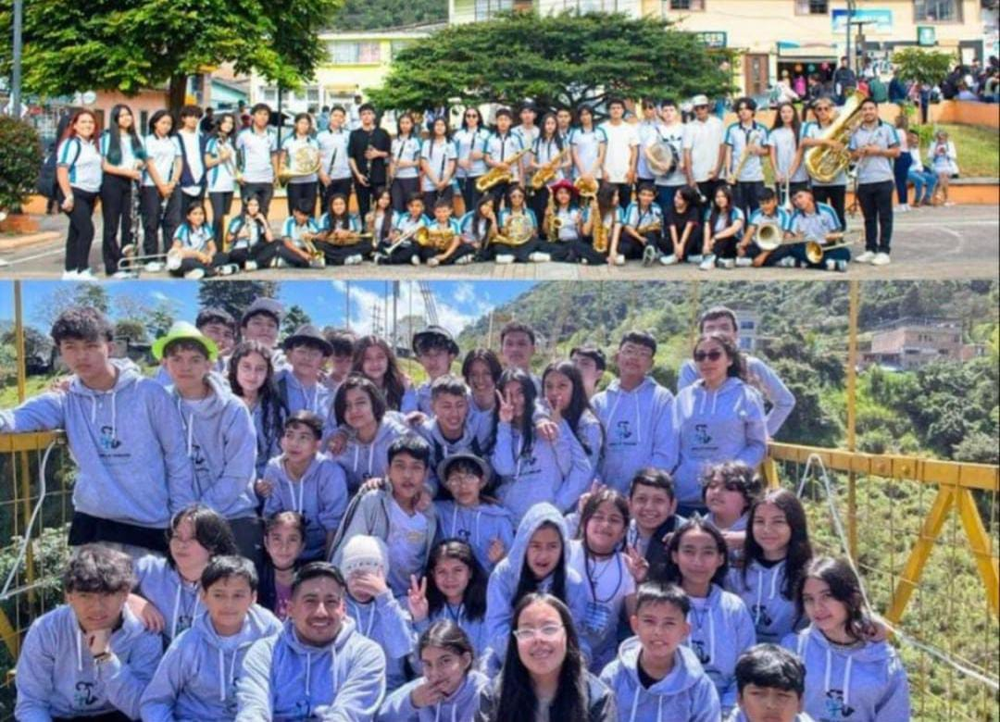

PORTAFOLIO
Soy Alexandra Puerres, nacida el 20 de agosto de 2006 en Pasto. Me gradué de bachiller en 2023 y tengo una pasión por la música, la cultura y la informática. Durante 5 años, fui percusionista en una banda sinfónica, lo que me permitió desarrollar mi creatividad y disciplina..
Mi gran pasión es la música. Durante cinco años, tuve el privilegio de ser percusionista en una banda sinfónica. Fue una experiencia increíble que no solo me permitió desarrollar mis habilidades, sino también competir con otras bandas, viajar y ganar varios reconocimientos. Estoy profundamente orgullosa de mis raíces y la rica cultura de mi tierra. Actualmente, mi enfoque profesional se ha desplazado hacia el fascinante mundo de la tecnología, explorando áreas como las redes y otras ramas que me parecen sumamente interesantes.
1.
Objetivo
Mi objetivo principal es fusionar mi sólida ética de trabajo y mi disciplina con el mundo de la tecnología. Estoy buscando oportunidades para aplicar mis habilidades en redes, contribuir a proyectos innovadores y seguir aprendiendo en un entorno profesional. Me motiva enfrentar nuevos retos y crecer dentro de la industria tecnológica.
2.
Habilidades
Música: Percusión sinfónica, lectura de partituras, trabajo en conjunto.
Habilidades Interpersonales: Disciplina, trabajo en equipo, perseverancia, adaptabilidad.
Habilidades Técnicas: Conocimientos en redes de computadoras (con un enfoque en expansión), resolución de problemas.
3.
Proyectos
Banda Sinfónica: Participación y contribución en diversas competencias y presentaciones, logrando múltiples reconocimientos.
Proyectos Personales: Actualmente, me dedico a explorar y crear proyectos enfocados en redes y otras áreas de la tecnología para fortalecer mis habilidades prácticas.